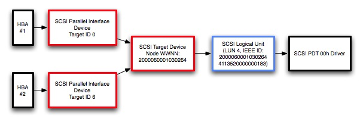

|
IntroductionThe purpose of multipathing is to allow a single device to be connected to a host computer by more than one path, providing both redundancy and load balancing for increased performance. This technote explains what is required to make your host bus adapter (HBA) drivers and FibreChannel target devices compatible with the multipathing support in Mac OS X. Support for multipathing began shipping with Mac OS X 10.3.5. It's important to be aware that Apple’s multipathing implementation differs significantly from that of other storage vendors. Many vendors implement multipathing support at the logical unit level whereas Mac OS X implements multipathing at the target device level. As a result, multipathing currently does not get enabled on Mac OS X for many 3rd party storage solutions Multipathing Implementation used by Mac OS XMac OS X provides multipathing support on a per-target basis. Multipathing at the LUN level is not currently supported. The support for multipathing is provided by the IOSCSIArchitectureModelFamily KEXT and will be automatically enabled for devices that implement the required characteristics in firmware. Figure 1: Architecture of the multipathing support in Mac OS X.  IOSCSIArchitectureModelFamily requires that all targets using multipath support show the same LUN configuration. RAID controllers and other hardware that broadcast the same world-wide node name (WWNN) for multiple target interfaces but do not publish their LUNs symmetrically are not compatible with this multipathing approach and will exhibit undesirable characteristics and behavior. Load balancing across available paths to a device is done using a pressure-based algorithm. This algorithm attempts to keep the amount of outstanding I/O equal across all connections to a device by assigning new I/O requests to the port with the least amount of outstanding I/O. Although its primary function is to provide multipathing support across FibreChannel, this same technology is implemented as part of the Mac OS X SCSI support and could potentially be used across other implementations of SCSI as well. To support a different interface, you will need to either extract or synthesize a WWNN for each target you are connecting to. On FibreChannel, the WWNN is part of the information available for every node attached to the fabric. IMPORTANT: Currently, multipathing support requires the "Physical Interconnect" key in the Protocol Characteristics dictionary of the controller to be set to "Fibre Channel Interface". Other values will result in all data being sent across only one interface. At the time multipathing was added, FibreChannel was the only interface implemented that could support multipathing and a check against the protocol characteristics dictionary was added to prevent compatibility issues for existing drivers. Supporting Multipathing in your HBA DriverIf you are implementing a host bus adapter (HBA), have your HBA set the If your HBA does not need to dynamically discover targets added after boot (that is, returns false from Listing 1: Setting the kIOPropertyFibreChannelNodeWorldWideNameKey key for non-managed targets.
bool
com_foo_sampleAdapter::DoesHBAPerformDeviceManagement ( void )
{
// Report that we *DO NOT* manage our own devices - we rely on the OS to discover targets for us
return false;
}
bool
com_foo_sampleAdapter::InitializeTargetForID ( SCSITargetIdentifier targetID )
{
bool retVal = false;
OSData *targetWWNN = NULL;
// [...]
// Do any other target-specific setup here
// Set the WWNN to a hard-coded value for demonstration purposes
// In the real world, you would obtain the WWNN for each target node
// from your FibreChannel HBA
targetWWNN = OSData::withBytes("12345678", 8); // 64-bit WWNN
SetTargetProperty(targetID, kIOPropertyFibreChannelNodeWorldWideNameKey, targetWWNN);
targetWWNN->release();
retVal = true;
return retVal;
}
Alternatively, if your HBA is handling the creation and destruction of targets itself, locate the WWNN for the target and pass it to Listing 2: Setting the kIOPropertyFibreChannelNodeWorldWideNameKey key for managed targets.
bool
com_foo_sampleAdapter::DoesHBAPerformDeviceManagement ( void )
{
// Report that we *DO* manage our own devices - we will query all possible targets ourselves
return true;
}
bool
com_foo_sampleAdapter::addNewTarget ( SCSITargetIdentifier targetID )
{
bool retVal = false;
OSDictionary *targetDictionary = NULL;
OSData *targetWWNN = NULL;
targetDictionary = OSDictionary::withCapacity(2); // Just a small dict
// [...]
// Do any other target-specific setup here
// Set the WWNN to a hard-coded value for demonstration purposes
// In the real world, you would obtain the WWNN for each target node
// from your FibreChannel HBA
targetWWNN = OSData::withBytes("12345678", 8); // 64-bit WWNN
targetDictionary-> setObject(kIOPropertyFibreChannelNodeWorldWideNameKey, targetWWNN);
targetWWNN->release();
CreateTargetForID(targetID, targetDictionary);
targetDictionary->release();
retVal = true;
return retVal;
}
IMPORTANT: Multipathing support requires each connection to the device to appear with a unique SCSI Domain Identifier. If it does not, the multipathing subsystem assumes that it is the same connection and will not transfer data over this secondary connection. This will be handled for you if you subclass from IOSCSIParallelInterfaceController. If your driver subclasses from a different source such as IOSCSIProtocolServices or IOSCSIProtocolInterface, you will likely need to ensure this yourself. Supporting Multipathing in your SCSI Target DeviceIf you are implementing a target device, your device must publish results for INQUIRY page 83h, Device Identification Page, in binary format and provide either a EUI-64 or FCNameIdentifier. LUNs that are not presented symmetrically are currently not supported on Mac OS X. It is recommended that you provide a mechanism to allow a user to configure your target devices so that all LUNs are reported symmetrically. Related InformationTechnical Committee T10, SCSI Storage Interfaces Darwin Source Code, particularly the IOSCSIArchitectureModelFamily and IOSCSIParallelFamily source http://developer.apple.com/darwin/ Document Revision History
Posted: 2007-03-23 | ||||||||||||
|